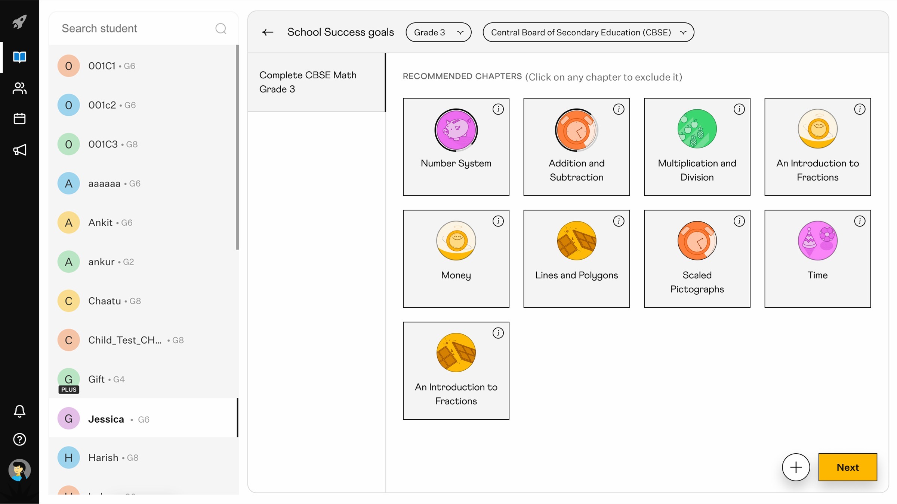
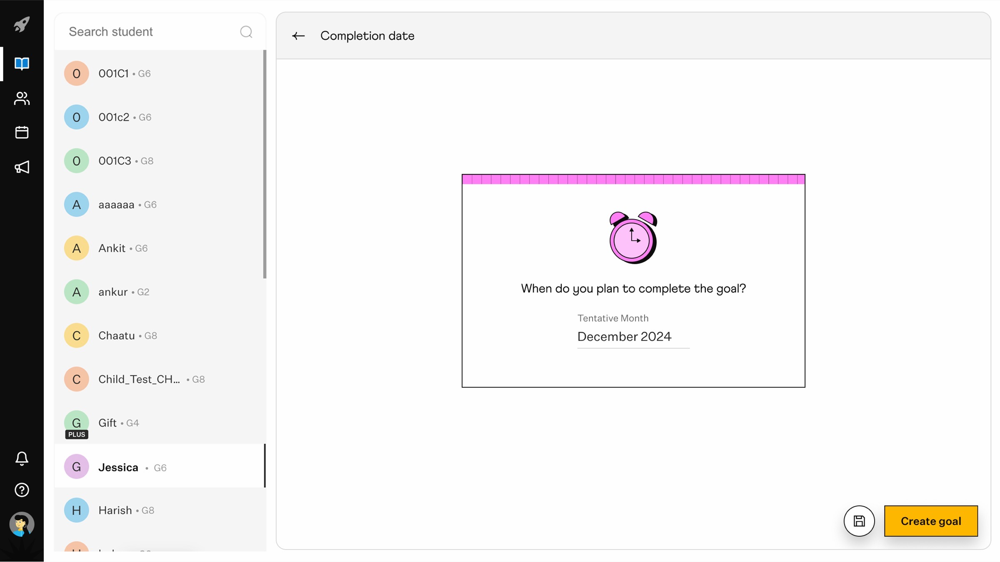

Tutoring Home Redesign
Cuemath's tutors couldn't customize learning for their students — programs were locked chapter lists, homework was buried two layers deep, and workarounds broke progress tracking. The PM defined a three-level structure (Chapter → Block → Node), and I designed the experience: a goal creation flow, a redesigned tutoring homepage with a homework queue and recent chapters, and a refreshed visual system for 13 content types.
Role
Product Designer · UX, Interaction Design
Team
PM · FE + BE engineers · Illustrator · Motion · Curriculum
Timeline
4 weeks · 2025
Outcome
30K
Active students benefited from the redesigned tutoring home.
3
New goal types: School Success, Test Prep, Enrichment.

A Chapter holds Blocks; each Block holds Nodes (learning, practice, videos, puzzles, and more). Lessons are mandatory; Resources are optional. Tutors compose custom goals across curricula; students see homework with day-by-day overdue tracking.
Open in Figma →
01
The Problem
Cuemath's tutors couldn't customize learning, and homework was buried two layers deep — workarounds broke progress tracking and students missed assignments.
When a tutor wanted to assemble a custom plan, the only path was program stacking — assign one program, then another, sometimes a third. Every chapter from each program came along, including ones that didn't apply. Within days, progress totals stopped meaning anything, homework lists became unreadable, and tracking broke.
For students, homework was hidden. To see what was due, they had to open a chapter, scroll past everything else, and find it at the bottom. Most never did. Tutors checking who'd done what had to dig into each chapter, item by item.
02
Role
Experience design: A shared surface with role-aware controls — Cuemath's tutoring home for tutors and students, built within a new Chapter → Block → Node structure.
- End-to-end UX/UI — goal creation flow, tutoring homepage, homework queue, and chapter UX for both tutor and student views
- Visual system — 13 distinct content treatments, category hierarchy (Lessons vs Resources), and state visuals (locked, unlocked, in-progress, completed)
- Interaction design — micro-interactions and motion across cards, state changes, and the homework queue
- Cross-functional collaboration — PM (structure spec), Engineering (data migration), Curriculum (content), Illustrator + Motion (visual + interaction language)
03
Decisions
Three constraints set the shape of the work: tutors needed to mix chapters across locked curricula, students needed homework where they'd actually see it, and the existing content couldn't be broken. All in 4 weeks. Three decisions made it work.
Decision 1 — Three goal types, ordered the way tutors think
Tutors couldn't customize learning before — they could only assign locked curriculum programs. I designed three goal types (School Success for academic prep, Test Prep for competitive exams, Enrichment for skill-building) and a creation flow that matched how tutors frame a student's path: goal type → grade and curriculum → chapters → timeline. Starting with the goal kept the conversation human; leading with grade and curriculum would have felt administrative.
The curriculum team pre-mapped Test Prep chapters to specific exams, so tutors didn't start from scratch. Auto-importing school curriculums was dropped — too much engineering for 4 weeks.


Goal creation flow: type → grade and curriculum → chapters → timeline.
Decision 2 — Surface homework first, with clear due-date signals
Homework was buried two layers deep before — students missed it, tutors couldn't tell who'd started. I moved it to the top of the homepage with a 7-day due-date countdown (Day 1–4 normal, Day 5–6 warning, Day 7 overdue). A Recent Chapters strip sat below for quick resume across all goals, and the goals themselves sat at the bottom for the full picture.
Three sources fed the queue: practice the system auto-generated, lessons teachers assigned, and smart-practice the system suggested based on weak spots. Per the spec, the queue showed 10 items at a time; the rest stayed hidden and surfaced as students cleared cards. Colour and tone shifted across the 7 days so a student or tutor could read urgency without opening a card. Teachers see the full queue.
Decision 3 — Make the chapter page readable at a glance
The PM specced Chapter → Block → Node, and the Curriculum team mapped each of the 13 content types into Lessons (mandatory, count toward progress) or Resources (optional enrichment). My job was making it human-readable — a chapter that a student or tutor could scan in seconds.
Chapter pages can be overwhelming — long content lists with no signal about priority, optionality, or progress. I designed a visual system: Lessons sit above Resources, each tile shows the student's state (locked, unlocked, in-progress, completed), and 13 content types get distinct treatments. A tutor can scan and see at a glance who stalled where, what's missed, what's left. New types slot in without breaking the system.

13 content types and 4 states (locked, unlocked, in-progress, completed) — visible on the student's chapter page.
04
Impact
Active students
30K
benefited from the redesigned tutoring home across CBSE, ICSE, and Common Core.
Goal types adopted
3
School Success, Test Prep, Enrichment — tutors picked up all three.
Content types unified
13 → 3
Inconsistent types organized into one 3-level structure (Chapter → Block → Node).
Content categories
2
Lessons (mandatory) and Resources (optional). Two patterns covered everything.
Tutors now mix chapters across curricula — pre-built program bundles are no longer the default. Milestones (exams passed, medals, competitions) were dropped to a follow-on phase.
05
Lessons
Tutors' workarounds were the spec for what to build next
Before goals existed, tutors couldn't mix chapters across CBSE and ICSE — so they stacked entire programs side by side and ignored the parts they didn't need. The system technically allowed it; it just broke tracking. The workaround wasn't a bug to fix — it was the unmet need to design for.
Ship the independent piece first to keep the team learning
Goal creation could run on the existing system. The chapter rebuild couldn't. Shipping goals first meant tutors started building custom learning paths weeks before the new chapter pages were ready — and what they used informed the design underneath. The dependency order was the learning order.